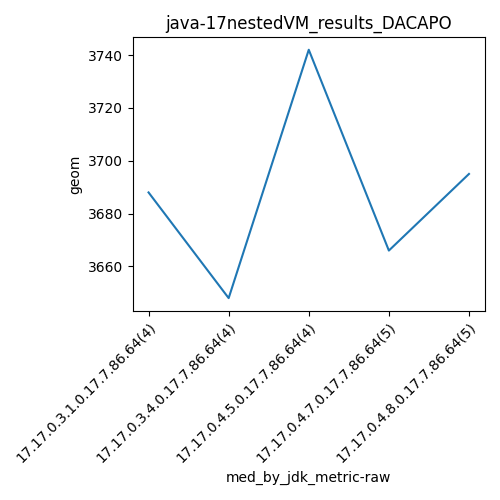

java-17 DACAPO
Context at bottom
/home/jvanek/git/benchmarks-in-nested-virtualisation-toolchain/final_results/nestedVM_results/nestedVM_results_J2DBENCH
java-17
DACAPO
/home/jvanek/git/benchmarks-in-nested-virtualisation-toolchain/final_results/nestedVM_results/nestedVM_results_RADARGUNs3
java-17
DACAPO
/home/jvanek/git/benchmarks-in-nested-virtualisation-toolchain/final_results/nestedVM_results/nestedVM_results_DACAPO
java-17
DACAPO
nestedVM_results_DACAPO
final score
Expected number of java-17 JDKs: 9
1st avgmed_alljdks_metric:
/home/jvanek/git/benchmarks-in-nested-virtualisation-toolchain/final_results/result_processing.py /home/jvanek/git/benchmarks-in-nested-virtualisation-toolchain/final_results/nestedVM_results/nestedVM_results_DACAPO geom False
values: [3502, 3436, 3688, 3731, 3725, 3589, 3630, 3648, 3742, 3758, 3626, 3615, 3666, 3684, 3458, 3632, 3734, 3695, 3828, 3646, 3708, 3631, 3556, 3603, 3658, 3776, 3773, 3463, 3565, 3456, 3532, 3725, 3563, 3726, 3642, 3570, 3671, 3688, 3567, 3516, 3577, 3619]

Expected number of iterations: 5
final number of values: 42 out of 45
Pass rate: 93.3%
values: (3436, 3828, 3633.7619047619046, 3642)

** accuracy from all jdks and runs
more is better
MIN: 3436
MAX: 3828
AVG: 3633.7619047619046
MED: 3642
Relative differences 1:
MIN-MAX: 10.0 %
MIN-AVG: 5.0 %
MIN-MED: 6.0 %
MAX-MIN: -11.0 %
MAX-AVG: -5.0 %
MAX-MED: -5.0 %
AVG-MED: 0.0 %
stored to java-17.properties. sort | uniq that!
2nd avgmed_by_jdk_metric:
values: [3589.25, 3648.0, 3685.25, 3634.8, 3701.6, 3673.2, 3548.2, 3634.4, 3593.4]

values: [3688, 3648, 3742, 3666, 3695, 3658, 3532, 3642, 3577]

values: (3548.2, 3701.6, 3634.233333333333, 3634.8)
values: (3532, 3742, 3649.777777777778, 3658)

** accuracy from all jdks where runs were avged
more is better
MIN: 3548.2
MAX: 3701.6
AVG: 3634.233333333333
MED: 3634.8
Relative differences 1:
MIN-MAX: 4.0 %
MIN-AVG: 2.0 %
MIN-MED: 2.0 %
MAX-MIN: -4.0 %
MAX-AVG: -2.0 %
MAX-MED: -2.0 %
AVG-MED: 0.0 %
stored to java-17.properties. sort | uniq that!
** accuracy from all jdks where runs were medianed
more is better
MIN: 3532
MAX: 3742
AVG: 3649.777777777778
MED: 3658
Relative differences 1:
MIN-MAX: 6.0 %
MIN-AVG: 3.0 %
MIN-MED: 3.0 %
MAX-MIN: -6.0 %
MAX-AVG: -3.0 %
MAX-MED: -2.0 %
AVG-MED: 0.0 %
stored to java-17.properties. sort | uniq that!
/home/jvanek/git/benchmarks-in-nested-virtualisation-toolchain/final_results/nestedVM_results/nestedVM_results_JMH
java-17
DACAPO
/home/jvanek/git/benchmarks-in-nested-virtualisation-toolchain/final_results/nestedVM_results/nestedVM_results_SPECJBB
java-17
DACAPO
/home/jvanek/git/benchmarks-in-nested-virtualisation-toolchain/final_results/nestedVM_results/nestedVM_results_RADARGUNs1
java-17
DACAPO
pass rates:
nestedVM_results_DACAPO=93.3%
Context:
- nestedVM_results
- DACAPO